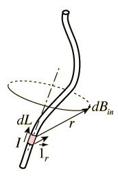

Biot-Savart Law
The Biot-Savart Law relates magnetic fields to the currents which are their sources. In a similar manner, Coulomb's law relates electric fields to the point charges which are their sources. Finding the magnetic field resulting from a current distribution involves the vector product, and is inherently a calculus problem when the distance from the current to the field point is continuously changing.
|  | 
|
See the magnetic field sketched for the straight wire to see the geometry of the magnetic field of a current.
| Another view of the geometry | Applications |
Magnetic field concepts
| HyperPhysics***** Electricity and Magnetism | R Nave |